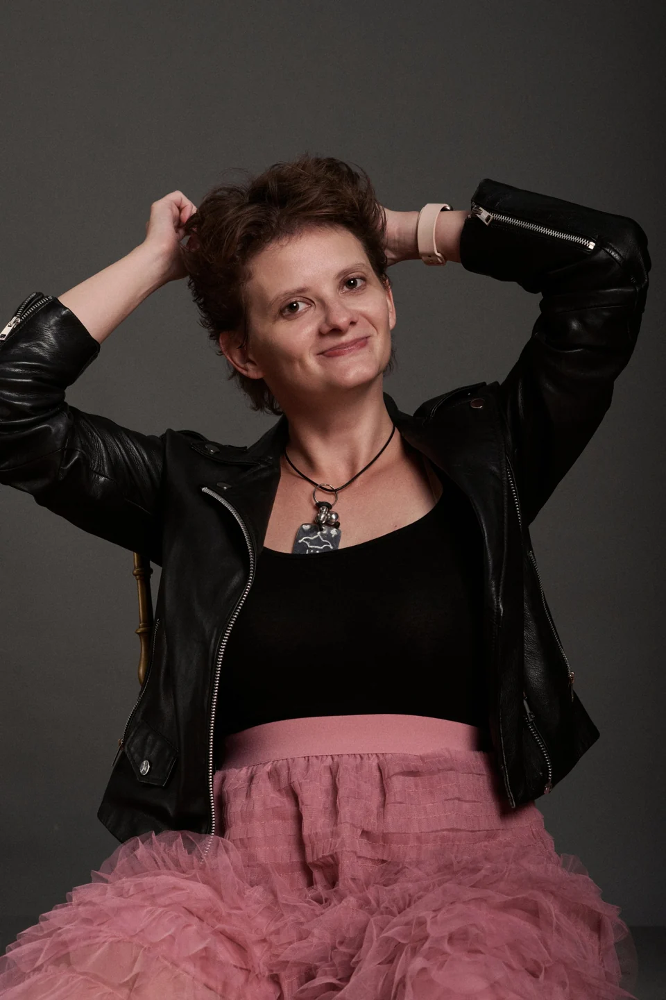

Novels &
poetry.
Windreader and Power of Words are in progress. My poems are in Russian, with English translations.
I'm an AI engineer and technical product manager specialising in natural language processing (NLP). I founded Aletheos ↗, where we build tools for journalists and civic organisations. I also write fantasy, science fiction and poetry.
NLP for education, question answering and text analysis. Papers, talks and teaching, including an upcoming course at Harbour.Space.
Research & teaching ↗Clinical NLP, semantic search, newsroom tools and product leadership.
Projects ↗Windreader and Power of Words are in progress. My poems are in Russian, with English translations.
Music, books, films and games, with a list of concerts and performances.
